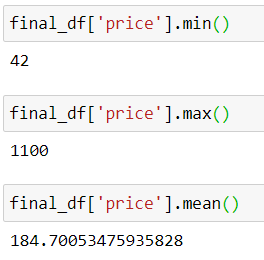
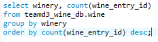
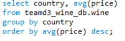

Our dataset was originally a large dataset filled with wine reviews from all over the world. Like we typically see in the data world, the initial dataset was messy and needed to be cleaned to figure out a plan for further analysis and cleaning.
The initial dataset included 129,971 wine reviews with 13 potential pieces of information for each review -- country, description, designation, points, price, province, region 1, region 2, taster name, taster Twitter handle, title, variety, and winery. In reference to data quality, there was quite a bit of null values in our dataset. Due to these null values and not necessarily needing certain columns for our planned analysis, we were able to drop these columns: description, designation, region 1, region 2, taster name, taster Twitter handle, and title. We decided to keep the scores anonymous so didn’t need to keep the taster information.
From an initial analysis of our dataset, the price ranged from $4 to $3,300 with an average of $35.36. The points given by tasters ranged from 80 to 100 points with an average of $88.45.
From there, we dropped all Null values from the dataset. That got rid of quite a bit of rows; however, we decided to stick to all wines with a 97 point rating from the taster. By focusing on one wine rating of 97 points based on wine reviews from all over the world this app takes the veil off of where to find great wine whether you want to spend $40 or $1100 -- whether you want to stay within the United States or from or travel to Australia! It puts the power in people’s hands and allows them to get the most bang for their buck in the following ways:
**Getting the most value for their money at their desired price point.
**Making the most of their winery tour by planning it around wineries with high quality wine.
**Allow user to try different varieties of wine but by ensuring consistency of rating and quality allow user to really filter out what kind of wine they enjoy
**Ability to visualize what provinces/states have the highest concentration of 97 point wines at their wineries
To summarize, we are left with all wines that received a 97-point rating with all of these columns filled out (no null values): country, points, price, province, variety, winery. One of our developers wanted to do a geomap visualization; therefore, we needed to know the latitude and longitude of all the wineries. To do so, we created two empty columns in the data frame labeled lat and lng.
To get the latitude and longitude, we needed to use Google maps and extract the information. First, we generated a subset of the data frame that included all UNIQUE winery, province, and country rows with the empty lat and lng columns as well. From there, we looked up each winery and added its coordinates. We were left with a data frame of all wineries + coordinates to use to fill out the lat and lng columns in our bigger 97-point wine clean data frame.
We then uploaded both CSVs to Python using Pandas. Using a for loop, we looped through every row in the unique winery data frame and set the latitude and longitude columns in the cleaned dataset to the rows for that winery. Here is code used for this section—
Now, we have our final cleaned dataset with location information. The final cleaned 97-point dataset had those 8 columns mentioned above with 187 rows fully filled-out. In regards to price, our final set ranged from $42 to $1100 with a mean of $184.70. This was extracted as a CSV to be used in the visualizations in our app.
Although the app needed CSVs to work properly, we wanted to finish the entire ETL process and load the data into a database using Python. We decided to use a mySQL connection and import the data into a database and a table. First, we used a create_server_connection function to do just that – connect to the server. Then, we created a database called “teamd3_wine_db” to use for the data.
From there, we created a table called “wine” to hold the final data frame mentioned above. From there, we looped through the final data frame row by row and inserted each row into the database table. Using a cursor and mySQL connection, we do have to execute the insert statement and commit it to the database each insert. See below—
From there, the database was successfully established! Here is the proof in code and in mySQL.
For one last bonus part of our project, we did some initial mySQL analysis of the final cleaned dataframe. See the queries + the results of the queries below--
Top Wine Varieties in our Dataset
Top Countries in our Dataset
Top Provinces/States in our Dataset
Top Wineries in our Dataset
Most Expensive Wine Varieties by Bottle in our Dataset
Most Expensive Wineries by Bottle in our Dataset
Most Expensive Provinces by Bottle in our Dataset
Most Expensive Countries by Bottle in our Dataset
